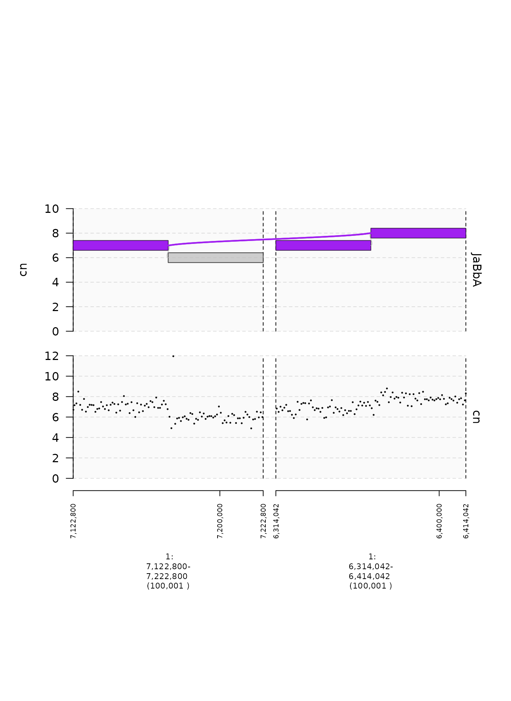
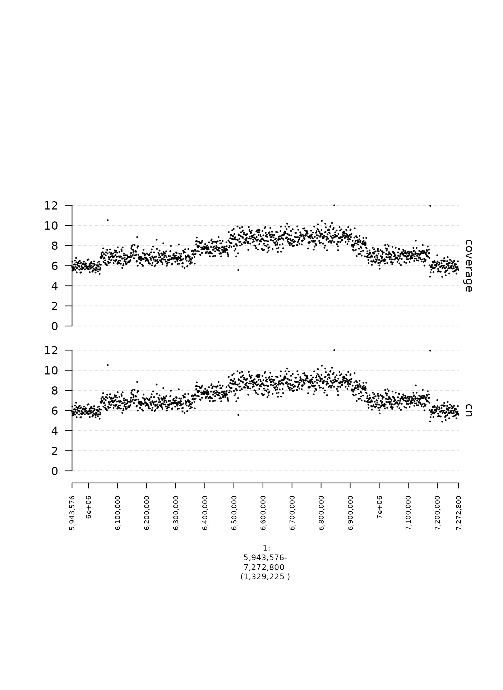

Overview of gTrack parameters
Source:../../../../groups/imielinski_lab/home/zchoo/git/gTrack/vignettes/gtrackparams.rmd
gtrackparams.rmdThis is a (non-comprehensive) overview of gTrack parameters that are commonly modified from their default values.
Axes
Track names (name)
The name specifies the track label that is shown to the right of a subplot. Arguments must be character vectors. The default is an empty string, which creates an unlabeled plot. Below is an example of a scatter plot with and without a name argument.
coverage.gr = readRDS(system.file("extdata", "ovcar.subgraph.coverage.rds", package = "gTrack"))
## read depth gTrack without name argument
coverage.gt = gTrack(coverage.gr, y.field = "cn", circles = TRUE, lwd.border = 0.2, y0 = 0, y1 = 12)
## read depth gTrack with name argument
coverage.name.gt = gTrack(coverage.gr, name = "coverage", y.field = "cn", circles = TRUE, lwd.border = 0.2, y0 = 0, y1 = 12)
fp = parse.gr("1:6043576-7172800")
plot(c(coverage.gt, coverage.name.gt), fp + 1e5)
Quantile-based Y-axis cutoffs (y.quantile)
By default, the minimum and maximum y-axis values are determined by the values of the 1st and 99th percentiles of the data to be plotted. This percentile can be changed by adjusting y.quantile in order to plot a wider or narrower range of points. The example below compares two different values of y.quantile.
coverage.gr = readRDS(system.file("extdata", "ovcar.subgraph.coverage.rds", package = "gTrack"))
## plot points between 1st and 99th percentile
coverage.1.gt = gTrack(coverage.gr, y.field = "cn", circles = TRUE, lwd.border = 0.2, y.quantile = 0.01)
## plot points between 20th and 80th percentile
coverage.20.gt = gTrack(coverage.gr, y.field = "cn", circles = TRUE, lwd.border = 0.2, y.quantile = 0.2)
fp = parse.gr("1:6043576-7172800")
plot(c(coverage.1.gt, coverage.20.gt), fp + 1e5)
Specifying Y-axis cutoffs (y0 and y1)
The minimum and maximum y-axis values can also be specified directly with y0 and y1 respectively, which must be numeric values. Below is an example of the same data with two different settings for y0 and y1.
coverage.gr = readRDS(system.file("extdata", "ovcar.subgraph.coverage.rds", package = "gTrack"))
## plot points between 0 and 12
coverage.wide.gt = gTrack(coverage.gr, y.field = "cn", circles = TRUE, lwd.border = 0.2, y0 = 0, y1 = 12)
## plot points between 5 and 10
coverage.narrow.gt = gTrack(coverage.gr, y.field = "cn", circles = TRUE, lwd.border = 0.2, y0 = 5, y1 = 10)
fp = parse.gr("1:6043576-7172800")
plot(c(coverage.wide.gt, coverage.narrow.gt), fp + 1e5)